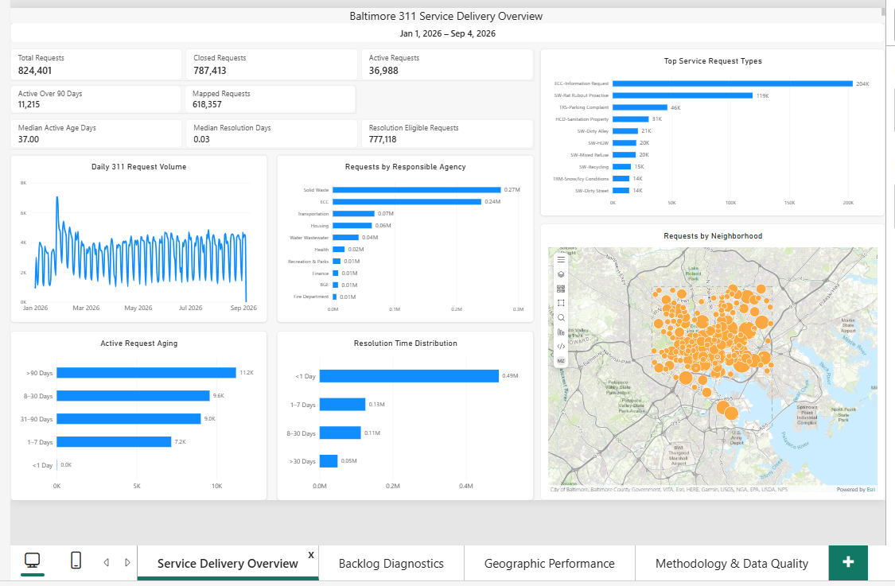
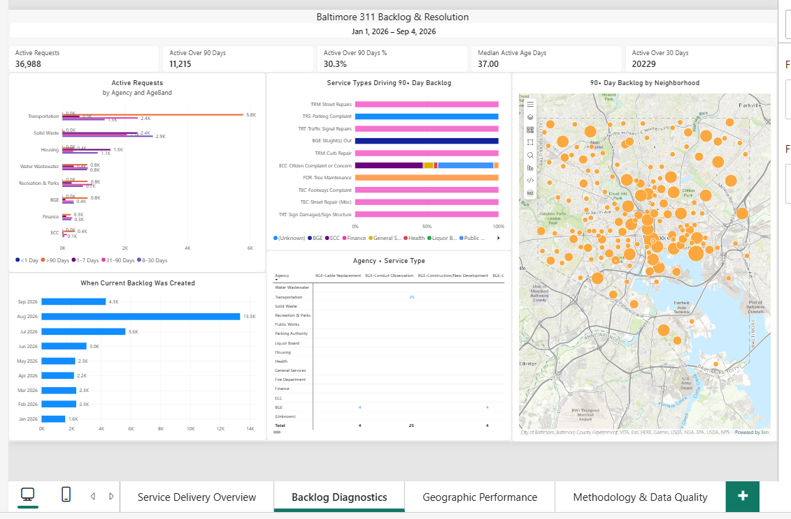
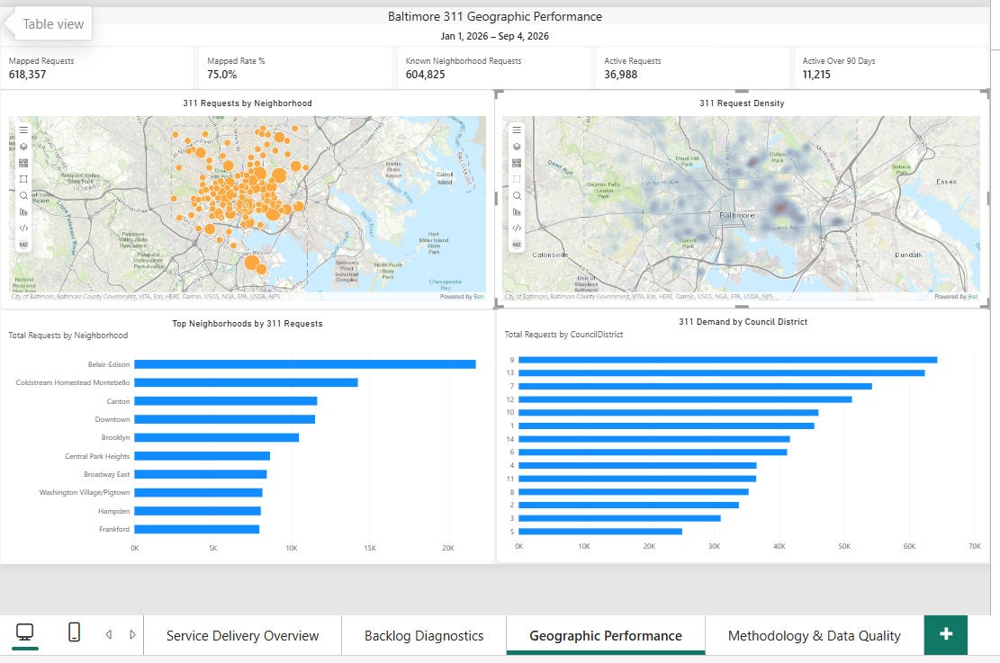
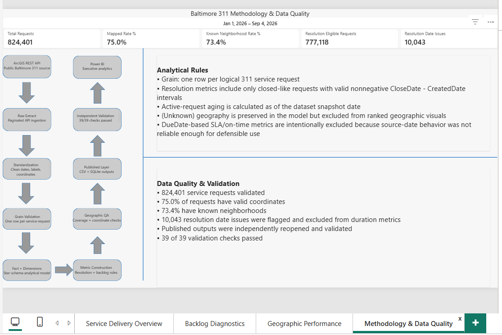

Live API scale
824,401 requests were processed from a public ArcGIS FeatureServer snapshot.
CASE STUDY · PROJECT 04
Baltimore 311 Demand, Resolution & Geographic Performance
An end-to-end public-sector analytics project that turns a live municipal 311 API into a validated, BI-ready analytical model and four-page Power BI report covering service demand, unresolved workload, resolution behavior, and geographic concentration.
THE ANALYTICAL PROBLEM
The source contained hundreds of thousands of live service-request records, multiple identifiers, incomplete geography, status variations, date anomalies, and an API record limit that required deliberate pagination. Before building any dashboard, the source had to be profiled, extracted safely, standardized, reconciled, and modeled at a proven analytical grain.
824,401 requests were processed from a public ArcGIS FeatureServer snapshot.
Date behavior and incomplete geography required explicit analytical rules rather than assumptions.
The Power BI model was built only after row grain, key uniqueness, and published outputs were validated.
PIPELINE ARCHITECTURE
The source gets a vote in the analytical design.
PROVEN ANALYTICAL GRAIN
Three candidate identifiers — RowID, SRRecordID, and
ServiceRequestNum — were validated across the full population. Each was complete,
unique, and mapped one-to-one with the others.
DimDate 1 ──── * FactServiceRequest DimServiceType 1 ──── * FactServiceRequest DimAgency 1 ──── * FactServiceRequest DimMethodReceived 1 ──── * FactServiceRequest DimNeighborhood 1 ──── * FactServiceRequest DimCouncilDistrict 1 ──── * FactServiceRequest
INDEPENDENT VALIDATION
Published CSV and SQLite outputs were reopened independently of the transformation path. Validation covered fact row counts, key uniqueness, dimension reconciliation, manifest counts, SHA-256 hashes, metric populations, and the intentional exclusion of unsupported DueDate-based SLA metrics.
ANALYTICAL RULES
Resolution KPIs use closed-like requests with populated dates and a nonnegative
CloseDate - CreatedDate interval.
Active backlog age is calculated as of the dataset snapshot date rather than the user's current system date.
Missing geography is preserved in the model and excluded only from rankings that require a real geographic category.
240,645 records had DueDate < CreatedDate. Without defensible source semantics,
on-time/SLA measures were not published.
DATA QUALITY
POWER BI REPORT

Overall request volume, status, demand drivers, aging, resolution, and neighborhood distribution.

Unresolved workload, age composition, 90+ day service drivers, creation cohorts, and neighborhood concentration.

Neighborhood demand, request density, mapped coverage, and council-district comparisons.

Pipeline architecture, analytical rules, geographic coverage, validation, and disclosed limitations.
SELECTED FINDINGS
ECC-Information Request was the highest-volume service type with 203,835 requests, but only 9 were active-like in the analytical snapshot.
Solid Waste was the highest-volume agency with 271,903 requests and 7,431 active-like requests, making it materially relevant to backlog analysis.
TECHNICAL HIGHLIGHTS
Extraction reconciles API counts and uses lock/temp-file controls to prevent silent corruption.
Three independent request identifiers were validated as unique, complete, and one-to-one.
Dimension surrogate keys create clean one-to-many relationships for Power BI.
Resolution and backlog measures follow explicit source-quality rules instead of blanket calculations.
Mapped and unmapped populations are disclosed so spatial visuals are interpreted in context.
Published outputs are reopened and verified rather than assumed correct because the pipeline finished.
OUTCOME
Project 04 demonstrates public API ingestion, pipeline safety, data-quality investigation, dimensional modeling, conservative metric design, geospatial analysis, independent validation, orchestration, and executive Power BI reporting in one portfolio project.
Profile first. Model second. Validate before presenting.